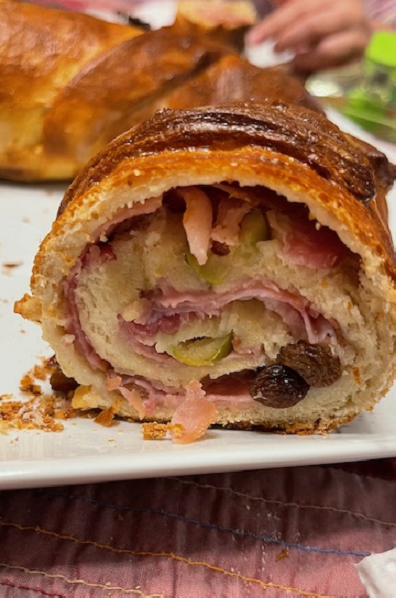

Ham Bread
Ingredients
- 500gr All-purpose flour
- 60gr Butter
- 50gr Sugar
- 12g fresh yeast or 7g dry yeast
- 245ml Warm milk
- 250gr Smoked Bacon
- 500gr Smoked Ham
- 200gr Raisins or raisins
- 300gr Olives stuffed with pepper
- 1 tsp. Salt
Optional to Varnish
- 1 Egg
- 1 tbsp. Brown sugar

Preparation
- In 1/2 cup of milk with a tablespoon of sugar, place the yeast and let it rest to activate.
- In a bowl, place the flour and the rest of the sugar, outside around the flour place the salt so that it does not touch the yeast when it is added.
- Add the egg and the remaining milk.
- Add the yeast and mix everything.
- After everything is mixed, add the butter and knead until everything is integrated.
- Let it rest for approximately 1 or 2 hours until it doubles in size.
- Stretch out the dough and place layers of ham, then the bacon, the sliced olives and the raisins.
- Roll up and bake at 180 C for 30 min to 45 min (depends on the oven).